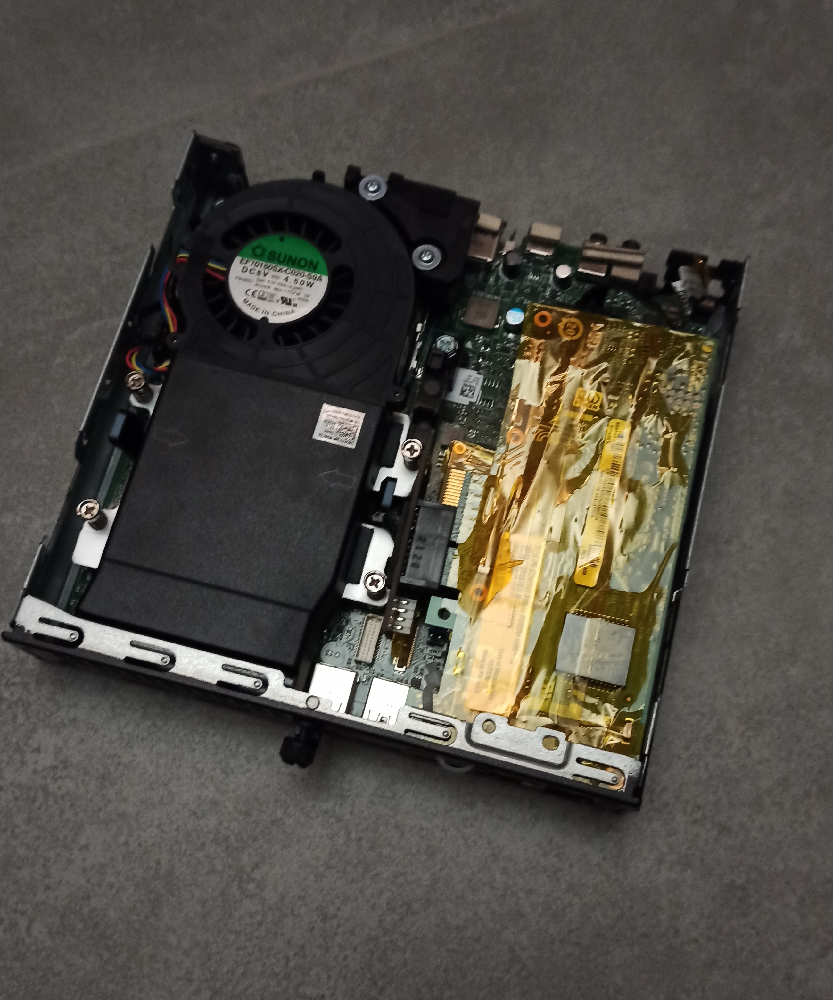
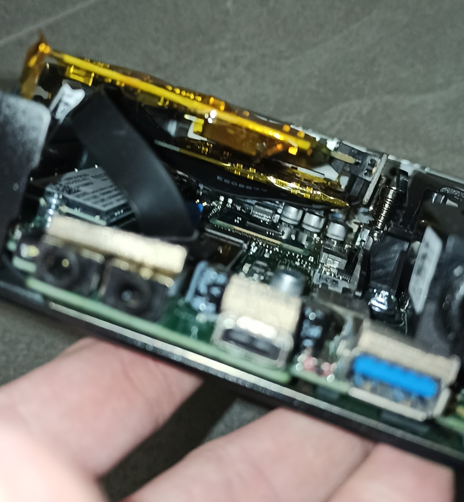
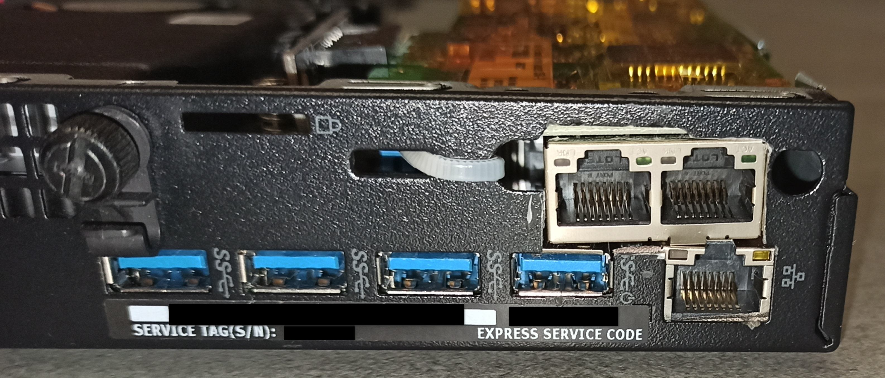
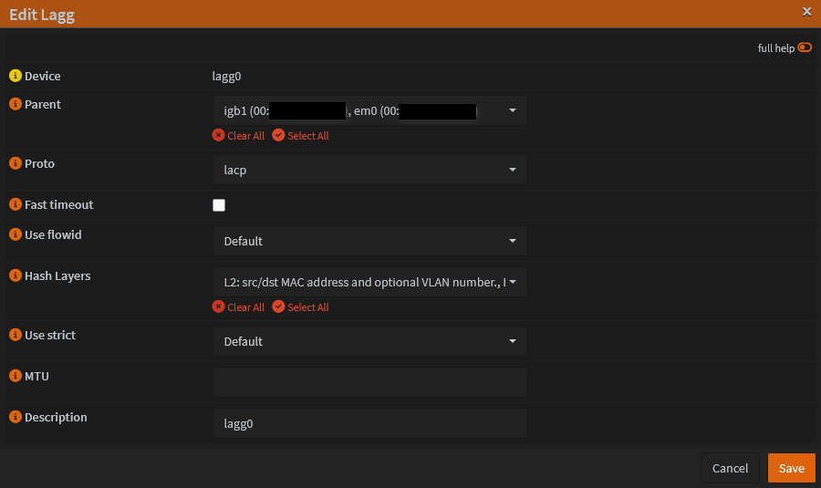
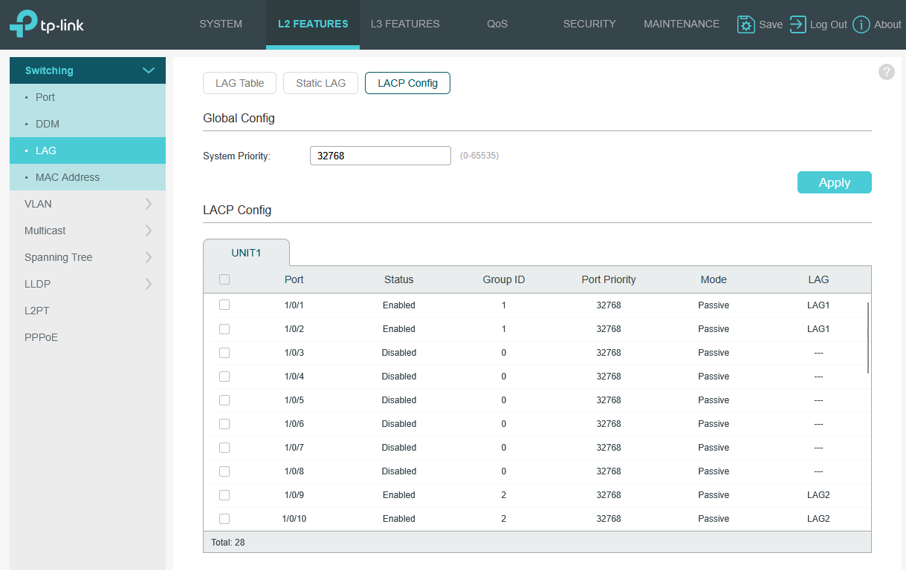
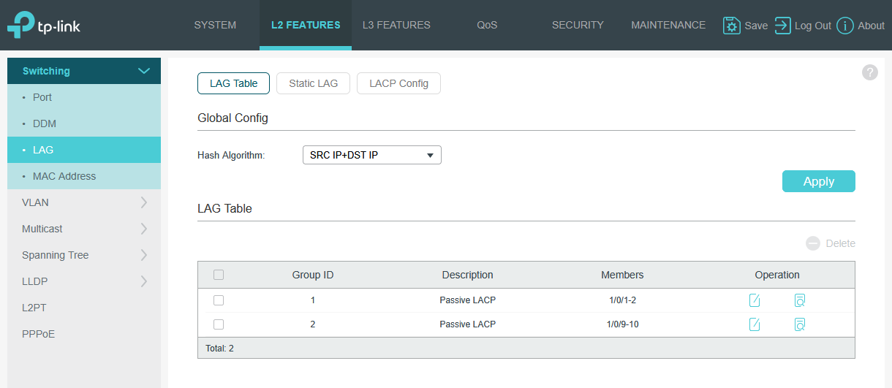
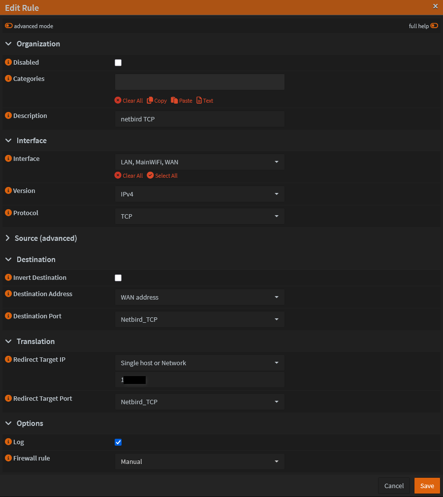
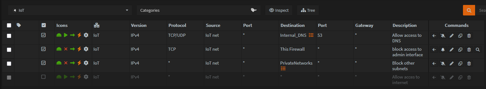

OPNsense Firewall Deployment
This page documents the hardware modification, installation, and configuration of the core network firewall and router using OPNsense.
1. Hardware & Modifications
The firewall runs on a modified Dell Optiplex 7050 Micro. Because micro-form-factor PCs typically lack PCIe expansion slots, hardware modifications were necessary to add the required network interfaces.
- Network Expansion: Used an M.2 to PCIe adapter to connect an additional network card I had on hand. I carefully cut a slot in the back chassis to accommodate the new ports.
- Storage / Redundancy: Installed two SSDs configured in a ZFS Mirror during the OPNsense installation process to ensure high availability and protect against drive failure.
Modification Gallery:



2. Network Interfaces & LAGG
The system has a total of three 1Gbps network interfaces. To maximize bandwidth and provide redundancy to the core switch, the LAN side is configured using Link Aggregation (LAGG).
- WAN: 1x 1Gbps Interface
- LAN: 2x 1Gbps Interfaces bonded in a LAGG
LAGG Configuration
The LAGG is configured using LACP to connect to the core managed switch.
- Selected Interfaces:
igb0,em0 - Protocol: LACP
- Hash Layers: L2 and L3



3. VLAN Segmentation
To ensure security and isolate broadcast traffic, the network is segmented into the following VLANs, all routed through OPNsense:
- Trusted Devices: Primary network for personal PCs.
- Main WiFi: Standard wireless access.
- IoT (Internet of Things): Isolated network for smart home devices.
- CCTV: Completely locked-down network for IP cameras.
- DMZ: Demilitarized zone for externally exposed services (e.g., Netbird container).
4. DNS & DHCP Configuration
Primary DNS (AdGuard Home)
To manage network-wide ad blocking, tracking protection, and custom DNS filtering, the os-adguardhome-maxit plugin is utilized. AdGuard Home serves as the primary, authoritative DNS server for all VLANs.
AdGuard Home
For detailed configuration, blocklists, and DNS routing rules, refer to the AdGuard Home documentation page.
DHCP Server (Dnsmasq)
For IP address assignment and management across the various VLANs, OPNsense is configured to use Dnsmasq as the DHCP server. It handles standard dynamic IP leases for client devices, as well as serving static IP mappings for core homelab infrastructure and servers.
5. Firewall Rules & Port Forwarding
Netbird DMZ Port Forwarding
To route external traffic to the Netbird server located in the DMZ, specific ports are forwarded. To keep the configuration clean, an Alias was created containing all required Netbird ports, which is then applied to a single NAT Port Forward rule.
Example rule:

NAT Reflection
NAT Reflection is enabled globally. This allows internal devices on the LAN to access internally hosted services using their external public IP/Domain name seamlessly without leaving the local network.
IoT VLAN Rules Example
The IoT network is strictly controlled to prevent compromised smart devices from pivoting into the trusted network.
IoT Rule Order:
- Allow DNS: Permit traffic to the local DNS server.
- Block Access to Firewall: Prevent access to the OPNsense web GUI and SSH.
- Block Inter-VLAN Routing: Prevent access to all other local subnets (Trusted, Management, etc.).
- Internet Access: The default "Allow All" internet rule is strictly disabled (or conditionally enabled only for specific devices that require cloud access).

6. Services & Plugins
The following official and community plugins are installed to extend the firewall's capabilities:
os-adguardhome-maxit(DNS filtering and ad-blocking)os-crowdsec(Collaborative IPS/threat defense)os-ddclient(Dynamic DNS updating)os-dmidecode(Hardware info reporting)os-gdrive-backup(Automated cloud backups)os-mdns-repeater(Multicast DNS across subnets)os-vnstat(Bandwidth monitoring)os-wol(Wake-on-LAN functionality)os-smart(SSD/HDD health monitoring)
Service Highlights
CrowdSec Intrusion Prevention (IPS)
The os-crowdsec plugin provides a collaborative, community-driven Intrusion Prevention System. It actively monitors OPNsense logs and leverages the CrowdSec network to automatically identify and drop malicious traffic. The integrated Firewall Bouncer is configured to block known malicious IPs attempting to scan, probe, or brute-force the WAN interface and exposed DMZ services.
Dynamic DNS (Cloudflare)
os-ddclient is configured to automatically update the public IP address via the Cloudflare API whenever the ISP changes the WAN IP, ensuring external services remain reachable.
mDNS Repeater
Configured to listen across the Main WiFi and IoT networks. This allows trusted devices (like phones) to discover and control IoT devices (like Chromecasts or smart speakers) seamlessly across VLAN boundaries.
Automated Cloud Backups
To protect the complex firewall configuration, the os-gdrive-backup plugin is configured. OPNsense automatically encrypts and uploads its configuration XML to a secure Google Drive folder on a scheduled basis.
7. Remote Access & VPNs
To ensure reliable and redundant access to my homelab from the outside world, I maintain two separate VPN services. My primary mesh VPN is Netbird, but I also run a traditional OpenVPN server directly on the OPNsense firewall as a robust, router-level fallback.
Netbird
For detailed configuration, refer to the Netbird documentation page.
OpenVPN (OPNsense Failover)
While Netbird handles my primary peer-to-peer routing and is hosted in the DMZ, OpenVPN serves as my "break-glass" remote access method. Because it runs directly on the core OPNsense hardware, it guarantees I can still securely access my management interfaces to troubleshoot the network even if the Netbird container, Proxmox host, or DMZ VLAN goes offline.
1. Certificate Authority & Keys
Before setting up the server, the cryptographic trust chain was established in OPNsense under System > Trust > Certificates.
- Generated a new internal Certificate Authority (CA).
- Generated a new Server Certificate signed by the CA.
- Key Parameters: RSA 2048-bit, SHA-256 Hash Algorithm.
2. OpenVPN Server Configuration
The core server was configured under VPN > OpenVPN > Instances using the following parameters:
- Protocol: UDP
- Local Port: 1194
- Device Mode: TUN
- Cryptography: Attached the previously generated server certificate and enabled strict certificate verification.
- Network Settings: Assigned a dedicated VPN tunnel subnet and pushed the local DNS servers (AdGuard Home) to connected clients so local hostnames resolve correctly over the tunnel.
3. Firewall Rules for OpenVPN
To allow the VPN to function, two sets of firewall rules were created:
- WAN Interface: Created a rule allowing incoming UDP traffic on port 1194 to permit clients to initiate the connection to the firewall from the outside.
- OpenVPN Interface: Created rules to allow traffic originating from the VPN tunnel to access the required local VLANs.
4. User Creation & Client Export
To grant access to specific devices:
- Navigated to System > Access > Users and created dedicated OPNsense user accounts.
- Generated a unique client certificate for each user during the account creation process.
- Utilized the Client Export utility to easily download the fully assembled
.ovpnconfiguration profiles for deployment on laptops and mobile phones.